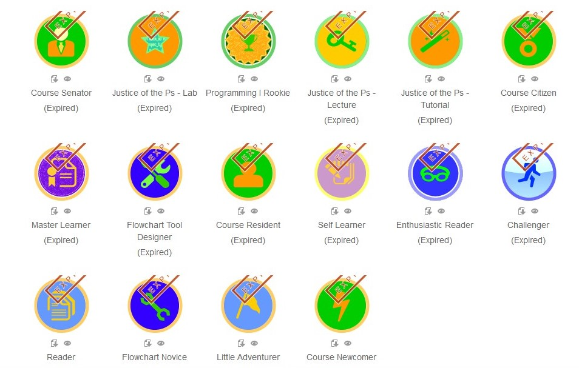

Disruptive Technology is the catalyst for bringing about more equitable access to high-quality education. Along with bringing computing to the masses, Disruptive Technologies also innovated the way our society was educated. Personal tutelage is an educational technology that has been around for centuries, but has historically only been available to the children of nobility or the wealthy elite. We are now entering an era, however, when computers and the Internet are making personalized learning accessible and affordable to the masses. These disruptive technologies are supplementing and scaling the impact of great mentors and instructors so that their expertise can be available to every student.
We see several examples of these technologies in our everyday life butdo you notice them?
Campus Wifi
Digital Badges
Online Course
Digital Coursewares
...........many others exist but the above are among the more popular methods.
Students are able to access WiFi campus wide, allowing them to conveniently access their online resources

Digital Badges can be given as a form of motivation, posted online to encourage other students to work toward earning a badge of their own
Many Learning Resources complied for ease of access on the web, you can enroll for a course online and attain your A from the comfort of your home